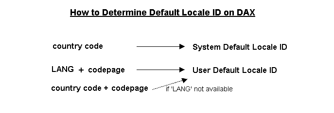

System Default / User Default Locale ID
This is a new feature which is not supported by the original US Open32.
Windows 95 asks the user to choose one language to use on the system at installation time. This language designates language ID and its associated locale ID that are to be used as a default locale by application programs. (The language ID is a lower word of a double word locale ID). In addition to this user-selected (user default) language ID and locale ID, there's a system default language ID and locale ID, which are usually not important for user-invoked application programs but might be used by system programs.
On the other hand, at this moment, it is not clear on new OS/2 how language or locale is selected by the user. The installation program may or may not display a panel for the user to select a language or locale, just like Windows 95. And, it is not clear how Open32 can know the system language or locale although there might be no generally available method to retrieve the information. So, the following discussion assumes there's no good method provided by the base operating system to determine the system and user-selected language or locale.
On Open32, the system default locale ID is determined by country code of a process (e.g. 0x0409 <<American English<;> is taken for 001 country <<USA<;>). Of course, country code does not give us enough information to determine the language of the base operating system and they may or may not be changed by the user, but there's no better way than using them. On the other hand, the user default locale ID is determined by LANG environment variable and, if necessary, by codepage of a process. If and only if the LANG environment variable is not set, Open32 utilizes country code and codepage of a process for the determination. If the LANG is not changed by the user, the user default locale ID usually becomes the same as the system default locale ID, but for DBCS countries that are providing two languages by switching codepages, reflecting the current codepage brings a consistent result to the user. Precisely speaking, Open32 does not maintain those locale IDs but associated language IDs. (Locale ID = Language ID + Sort ID) Open32 makes a locale ID from a language ID when requested.

As described above, Open32 utilizes country code, LANG, codepage to determine default locale IDs. From this, there's the following limitations:
Therefore, there's no method to change the system default locale ID, other than changing the country code in CONFIG.SYS file. But, this is not recommended because it may affect many other OS/2 programs' behavior. As for the user default locale ID, the user can either change LANG environment variable in CONFIG.SYS or change its setting value at command shell to invoke a Open32 application program. But, the user should be aware that changing the LANG environment variable in CONFIG.SYS file may affect other LANG -aware application programs' behavior (usually XPG/4 compliant programs). To change a certain Open32 application's user default locale ID only, the LANG setting value at command shell is useful.